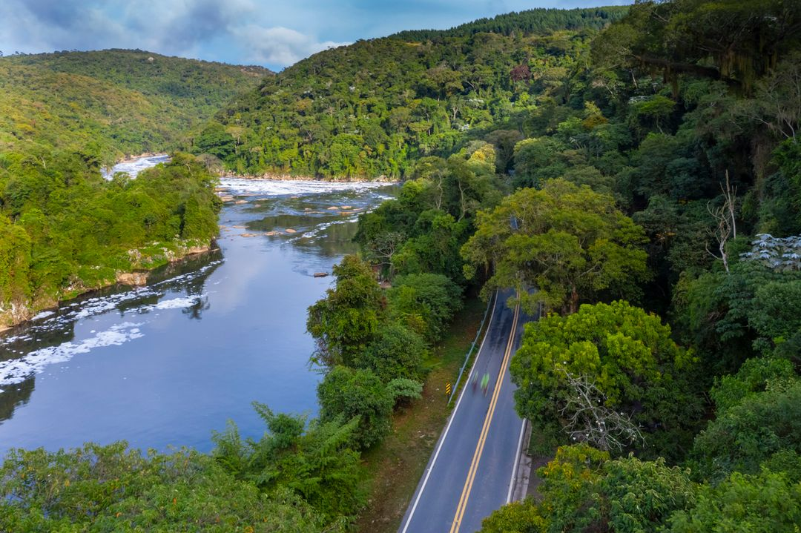

Centro Histórico
Conheça a Matriz Nossa Senhora da Piedade, a Praça Comendador e a Praça Alberto Mesquita de Camargo, onde ficam a escultura Gente da Nossa Gente e o Museu Histórico.
Localizar no mapa
Interior de São Paulo · Brasil
Natureza, história e tranquilidade para descobrir no seu ritmo.
Estrada dos Romeiros · Foto: Erich Sacco/iStock, via Catraca Livre
Em Cabreúva, o interior paulista encontra paisagens verdes, sabores locais e um centro cheio de memória. Um convite para desacelerar e conhecer a cidade com curiosidade e respeito.
Conheça o Destino CabreúvaUma seleção de lugares citados no roteiro Conhecendo Cabreúva. Confirme condições e horários antes de sair.
Conheça a Matriz Nossa Senhora da Piedade, a Praça Comendador e a Praça Alberto Mesquita de Camargo, onde ficam a escultura Gente da Nossa Gente e o Museu Histórico.
Localizar no mapaUm ponto de contemplação com vista para os morros e as serras que emolduram a cidade.
Localizar no mapaTemplo, jardins e espaços voltados à meditação. O endereço divulgado é na Av. Cláudio Giannini, 2035, Distrito do Jacaré.
Localizar no mapaOs links abrem uma busca de local no Google Maps; não representam cálculo ou validação de uma rota entre paradas.
Uma sugestão variada do Destino Cabreúva que combina centro histórico, paisagens, cultura e sabores locais.
Ver roteiro na fonteMatriz, praças, escultura e Museu Histórico.
Contemple os morros e as serras da região.
Vilela, Rainha da Praia e Pé do Morro são citados no roteiro; confirme visita e reserva com cada local.
Consulte a programação e as condições de visita antes de ir.
Cachoeira · Foto: GTFotografia/Shutterstock, via Guia da Semana
As opções de hospedagem podem mudar. Consulte o diretório atualizado de serviços turísticos antes de escolher onde ficar.
Consultar serviços locaisHorários, reservas e formas de visita podem variar.
DICA DE VIAGEMPara informações atualizadas sobre a cidade, roteiros e serviços, consulte os canais do Destino Cabreúva.
Acessar Destino Cabreúva Instagram do Destino Cabreúva